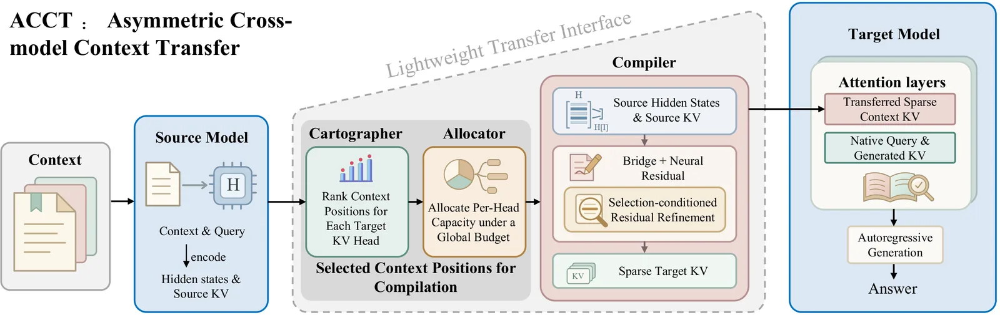
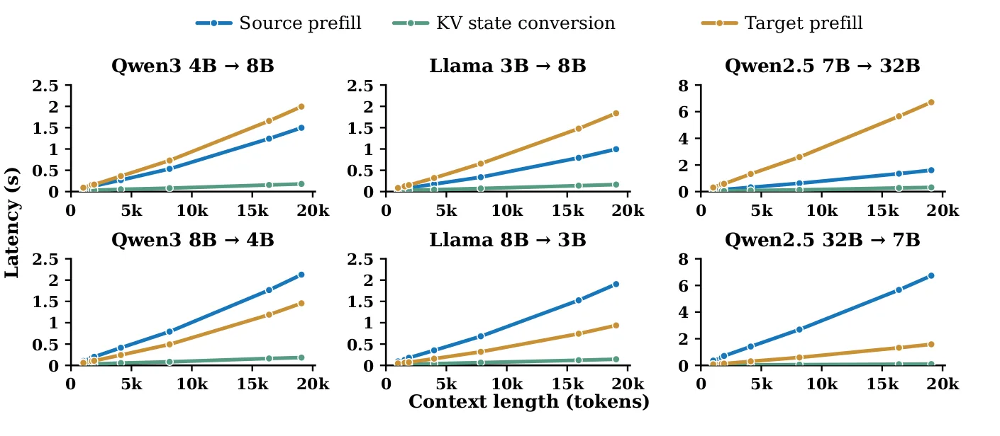
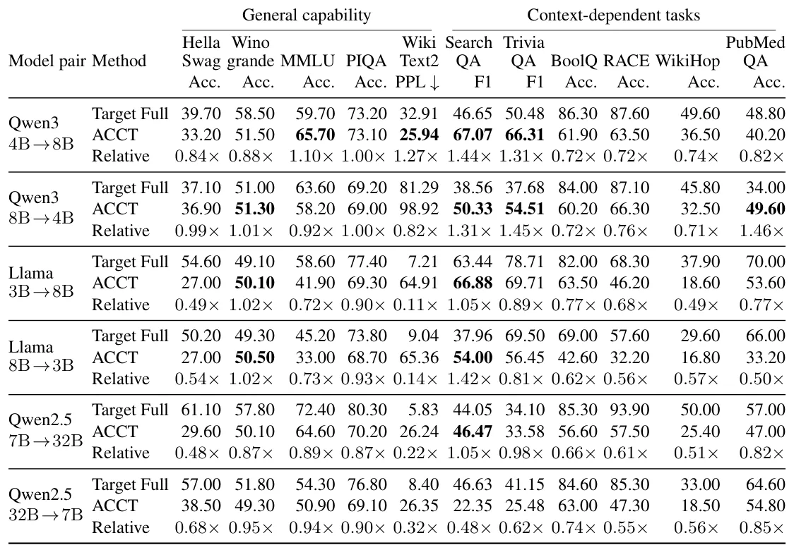

O custo oculto da heterogeneidade em LLMs
A tendência atual em sistemas de LLMs (Large Language Models) é o abandono do modelo único para implantações heterogêneas. Em produção, é comum que diferentes modelos sejam invocados dinamicamente para lidar com variações na dificuldade da tarefa, requisitos de latência ou disponibilidade de recursos. No entanto, o contexto da conversa, documentos recuperados ou estados de tarefa frequentemente persistem através dessas trocas de modelo.
O problema central é que, quando o mesmo contexto é passado para um novo modelo alvo, este geralmente precisa processar todo o contexto novamente para construir seus estados internos necessários para a inferência. À medida que os contextos crescem e são reutilizados, os custos de computação repetida e construção de estado se acumulam significativamente.
Os mecanismos de cache padrão, como o KV caching, reutilizam estados para tokens precedentes durante a geração, mas não tornam esses estados reutilizáveis por outros modelos. O cache KV depende conjuntamente dos parâmetros e da arquitetura do modelo, tornando-os geralmente intercambiáveis apenas dentro do mesmo modelo, e não entre modelos de diferentes escalas, mesmo que pertençam à mesma família.
A proposta: ACCT e a transferência assimétrica
Para resolver essa ineficiência, os autores da Tsinghua University propõem o ACCT (Asymmetric Cross-LLM Context Transfer). O objetivo é permitir que um modelo alvo aproveite a computação de contexto já realizada por um modelo fonte, transferindo os estados KV de forma que o alvo possa consumi-los diretamente.
O ACCT foca na transferência de cache KV entre modelos de diferentes escalas dentro da mesma família. Em vez de re-encodar o contexto bruto, o sistema transforma o cache KV produzido pelo modelo fonte em estados KV esparsos que o modelo alvo pode ler. Isso desacopla a computação de contexto da inferência downstream.
Essa abordagem permite que o contexto seja codificado por um modelo e o raciocínio downstream seja realizado por outro, mantendo a capacidade de raciocínio do alvo enquanto evita sua re-encodificação do contexto bruto. A transferência deve organizar a informação em torno das necessidades de raciocínio do alvo, retendo apenas o conteúdo relevante sob um orçamento especificado.

Como funciona: Os três componentes do ACCT
O ACCT consiste em três componentes leves que convertem representações de origem em cache KV alvo esparsos: o Cartographer, o Allocator e o Compiler. Juntos, eles realizam a seleção de informação, a alocação de orçamento de cache e a geração do cache alvo.
O Cartographer é responsável por pontuar os tokens de contexto para cada unidade de camada e cabeça de atenção (KV head) do modelo alvo. Ele utiliza as representações de contexto e consulta do modelo fonte para estabelecer prioridades de retenção dentro de cada unidade. Isso é crucial porque diferentes unidades alvo servem a funções diferentes, e a importância de um token varia dependendo da consulta e da posição no contexto.
O Allocator determina quantos tokens de contexto cada camada e cabeça do alvo deve reter, operando sob um orçamento total compartilhado de cache KV. Combinado com as pontuações do Cartographer, o Allocator decide quais estados KV da fonte serão mantidos. O orçamento conta os tokens retidos através das cabeças KV físicas.
Detalhes técnicos: Mapeamento e Compilação
O Compiler é o componente final que transforma os estados selecionados da fonte em chaves e valores legíveis pelo alvo. Ele converte apenas as representações de origem selecionadas em KV correspondente às camadas e cabeças do alvo. Após carregar esses pares KV, o modelo alvo processa apenas a consulta e gera a resposta, sem re-encodar o contexto bruto.
O Cartographer combina estados ocultos do contexto e da consulta, informações da camada alvo e posição do token para calcular uma pontuação. Ele extrai o conteúdo relevante para a consulta compartilhado entre unidades para evitar interações repetitivas consulta-contexto. Vetores de escala e deslocamento, derivados da unidade e do conteúdo relevante, são usados para ajustar a representação do token.
O sistema preserva os índices originais dos tokens para a codificação posicional. O cache de contexto transferido é construído a partir do contexto e da consulta para o alvo, permitindo que a inferência ocorra sem o custo do pré-enchimento nativo. O processo é treinado com os modelos fonte e alvo congelados, ajustando apenas a interface de transferência.
Avaliação experimental e resultados
Os autores avaliaram o ACCT em duas direções de transferência entre três famílias de modelos: Qwen3-4B e Qwen3-8B, Llama-3.2-3B e Llama-3.1-8B, e Qwen2.5-7B e Qwen2.5-32B. A avaliação cobriu cinco benchmarks de capacidade geral e seis tarefas altamente dependentes de contexto.
Os resultados mostram que o ACCT iguala ou excede o desempenho de inferência original do modelo alvo, mesmo quando o tamanho do cache KV é reduzido em 75%. Isso significa que o modelo alvo consegue realizar inferências precisas utilizando apenas uma fração dos slots de cache que utilizaria normalmente.
Em termos de eficiência, o ganho é significativo. Para um comprimento de contexto de aproximadamente 19K tokens, a conversão de KV do ACCT alcança um speedup de 6.5 a 21.2 vezes em comparação com o pré-enchimento de contexto do alvo. A latência de conversão cresce muito mais lentamente com o comprimento do contexto do que o pré-enchimento nativo.

Análise de precisão e compressão
A experimentação principal utilizou uma compressão de 4x, retendo aproximadamente um quarto dos slots de cache KV do alvo sob a regra de orçamento. Isso inclui as 32 posições mais recentes. O Cartographer e o Allocator foram treinados com 5.000 exemplos do dataset SearchQA, enquanto o Compiler usou um subconjunto fixo de 500 exemplos.
Os resultados indicam que, mesmo com a compressão agressiva e a transferência entre modelos de tamanhos diferentes, a qualidade da resposta não é comprometida. Em várias tarefas, o desempenho do ACCT superou o do modelo alvo processando o contexto completo nativamente.
Isso demonstra que a informação crítica para a resposta pode ser extraída eficientemente do contexto fonte e mapeada para o espaço de representação do alvo, sem a necessidade de reprocessar todo o texto original. O método preserva a capacidade de raciocínio do alvo ao evitar a re-encodificação.

Limitações e considerações
É importante notar que o ACCT é projetado especificamente para modelos da mesma família, que compartilham mapeamentos de token e arquiteturas compatíveis. A transferência entre famílias de modelos diferentes não foi abordada neste trabalho, pois as diferenças de tokenização e arquitetura podem exigir transformações mais complexas.
O método depende do treinamento da interface de transferência para cada direção de transferência. Embora os modelos fonte e alvo estejam congelados, os componentes leves (Cartographer, Allocator, Compiler) precisam ser treinados para cada par de modelos específico. Isso adiciona uma etapa de preparação que não é trivial, embora seja menos custosa que o treinamento completo do LLM.
A avaliação foi conduzida em um conjunto fixo de 10.000 exemplos. Embora os resultados sejam promissores, a generalização para outros tipos de tarefas ou domínios específicos pode variar. Além disso, o ganho de eficiência é mais pronunciado em contextos longos, onde o custo de pré-enchimento nativo é maior.
Implicações para sistemas heterogêneos
O ACCT abre caminho para sistemas de LLMs mais flexíveis e eficientes, onde a computação de contexto pode ser um recurso reutilizável entre modelos. Isso permite que sistemas orquestrem diferentes modelos para diferentes estágios de raciocínio ou para diferentes requisitos de latência, sem penalizar o usuário com latências de pré-processamento elevadas.
Ao desacoplar a computação de contexto da inferência, o ACCT permite que modelos menores aproveitem o conhecimento contextual processado por modelos maiores, ou que modelos mais rápidos reutilizem contextos processados por modelos mais lentos. Isso é particularmente relevante para aplicações em tempo real com janelas de contexto longas.
Os autores demonstram a viabilidade de transferir computação de contexto entre modelos sob um orçamento limitado de KV. Isso sugere que o futuro dos sistemas de LLMs em produção pode envolver pipelines mais complexos de transferência de estado, otimizando não apenas a inferência, mas também a gestão de memória e cache entre modelos heterogêneos.
O que fica
- O ACCT permite que um modelo alvo utilize o contexto processado por um modelo fonte, eliminando a necessidade de re-encodificação.
- O método usa três componentes leves: Cartographer, Allocator e Compiler para mapear estados KV esparsos.
- Em contextos de 19K tokens, o ACCT oferece um speedup de 6.5x a 21.2x comparado ao pré-enchimento nativo.
- A precisão do modelo alvo é mantida ou excedida, mesmo com uma redução de 75% no tamanho do cache KV.
Paper original: ACCT: Asymmetric Cross-LLM Context Transfer
Comentários
Nenhum comentário ainda. Seja o primeiro.